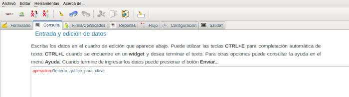
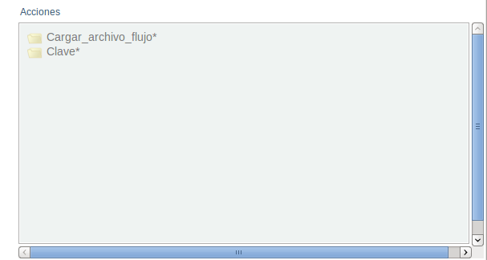
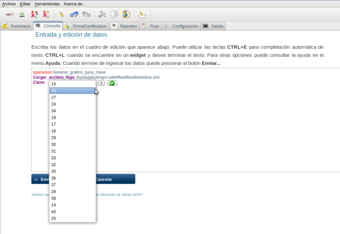
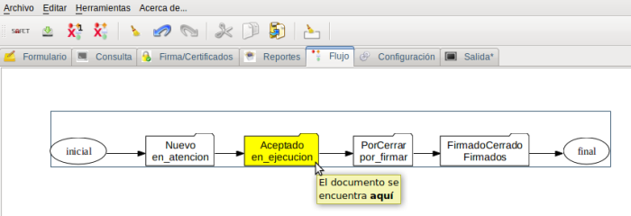

12.4.4.- operacion:Generar_gráfico_para_clave:
Esta operación permite visualizar el flujo de trabajo, donde indica, en que parte del flujo de trabajo (estado) se encuentra el documento con un determinada número de identificación (id). Para realizar esta operación se requiere hacer click sobre la operación Generar_gráfico_para_clave del menú inteligente, en el área de edición debe aparecer la linea de texto operacion:Generar_gráfico_para_clave, (ver figura S3.2.4-1) y aparte debe aparecer el menú inteligente con los campos relacionados con esta operación (ver figura S3.2.4-2)

Figura S3.2.4-1. Área cuadro de edición, selección de la operacion:Generar_gráfico_para_clave

Figura S3.2.4-2. Menú inteligente, campos de la operación Generar_gráfico_para_clave
se requiere montar el documento de flujo de trabajo (este documento debe estar almacenado en el directorio /[home/pbuitrago]/.safet/flowfiles y agregado en el archivo safet.conf en la sección [Widgets]), para la misma se debe hacer click sobre el campo Cargar_archivo_flujo* del menú inteligente, debe aparecer en el cuadro de edición la linea de texto Cargar_archivo_flujo: junto con un botón de selección donde se debe marcar el documento de flujo de trabajo a visualizar. (ver figura S3.2.4-3)

Figura S3.2.4-3. Cargar el documento de flujo de trabajo
Luego se procede a seleccionar el número de identificación (id) que vamos a consultar su ubicación en el flujo de trabajo (estado), para la misma se hace click el campo clave*: del menú inteligente debe aparecer la linea de texto Clave: junto que un botón de selección donde debe indicar el número de identificación (id) del ticket a consultar. (Ver figura S3.2.4-4)

Figura S3.2.4-4. Seleccionar el número de identificación del ticket consultar
luego se hace click en el botón enviar, si no presento problema, se muestra en la parte inferior izquierda
del cuadro de dialogo el mensaje:
Consulta fue exitosa....ok!
Ver gráfico de flujo de trabajo
(ver figura S3.2.4-5)

Figura S3.2.4-5. Resultado de Generar el gráfico para clave
Este procedimiento genera el flujo de trabajo donde muestra la ubicación (estado) del ticket dentro del flujo de trabajo, al colocar el puntero sobre el estado que esta coloreado, aparece un cuadro de dialogo que indica: “el ticket se encuentra aquí” (ver figura S3.2.4-6) el color del flujo de trabajo, se puede cambiar configurado en el archivo safet.conf o en la sección de configuración del sistema.

Figura S3.2.4-6. flujo de trabajo por clave